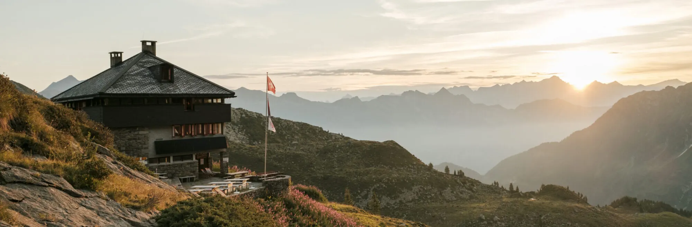
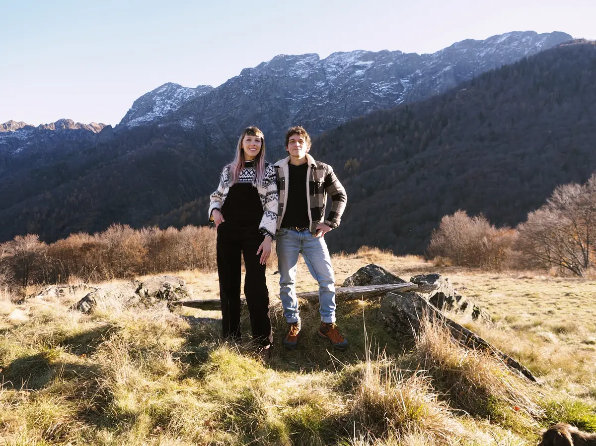
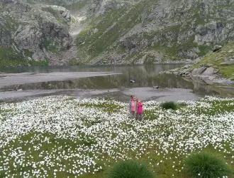
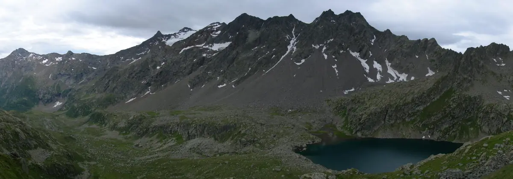
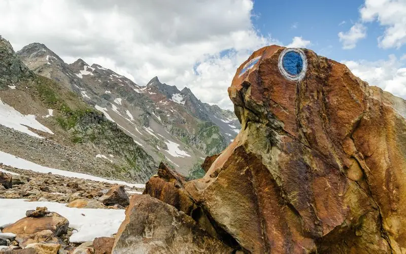
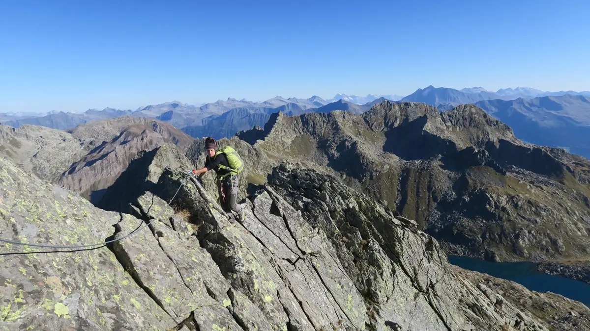
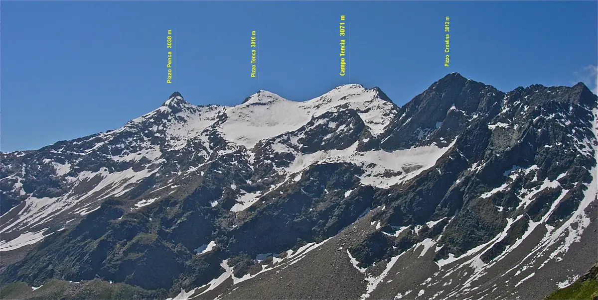
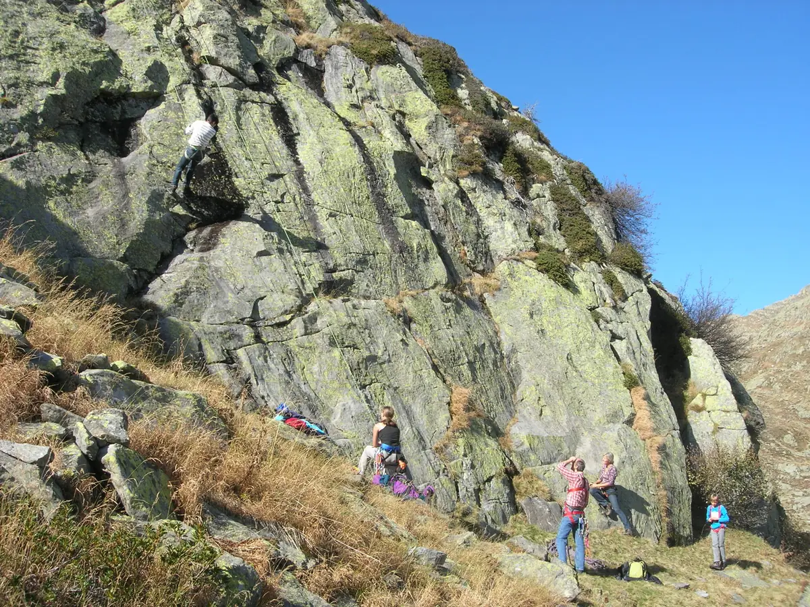
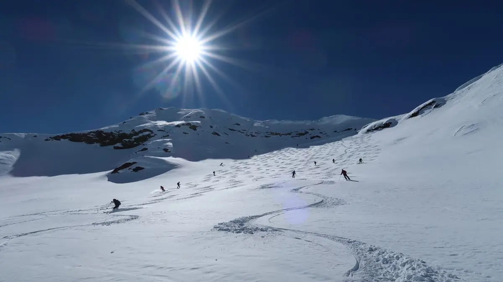
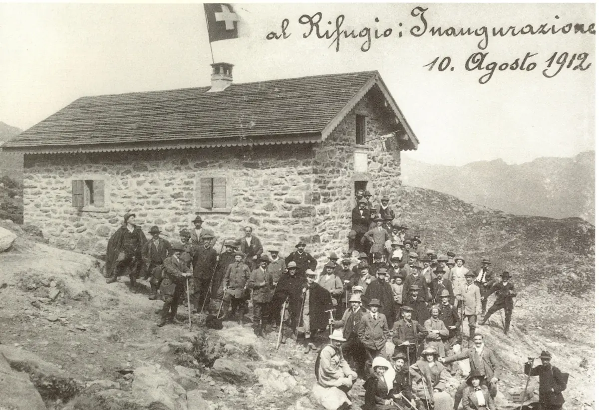

Campo Tencia
Val Piumogna, Leventina
- Altitude
- 2140 m
- Beds
- 80
- Staffed
- mid-June to mid-October

The hut
Set on a terrace high above the upper Val Piumogna, it is the ideal base for hikes, traverses to other huts and climbs such as Pizzo Campo Tencia, which at 3072 m is the highest peak lying entirely in Ticino.
The first hut in the mountains of Ticino was built in 1912 at the foot of the peak of the same name, on the Leventina side, in the upper Val Piumogna. It is a base camp for families, hikers and climbers: nature walks, Lago Morghirolo close by, the climbing crags and the great routes of the Campo Tencia group, with the classic traverse of the Cresta dei Corni.
The present building, designed by the section’s architect Oscar Hofmann and inaugurated in 1977, has three floors: on the ground floor the entrance, boot room, toilets and cellar; on the first floor a bright common room with 70 places and the kitchen; on the second about 70 beds in 7 dormitories, some with 4 to 8 places, ideal for families.
The beds have duvets; a sleeping-bag liner is compulsory. The hut has kept its 1980s character: no single rooms with bathroom and no hairdryers!
Your stay
- Opening
- All year round
- Staffed
- Mid-June to mid-October; not staffed in winter, but booking is required; for large groups the hut can be opened by arrangement with the keepers
- Beds
- 80
- Meals
- Hot food, served all day by the hut keeper
- Winter room
- Always open, with drinks and firewood
The kitchen
A simple, honest menu with a local flavour, though not only from Ticino: cold platters of cured meats and cheeses from the region, soups, fresh gnocchi and polenta with various accompaniments, depending on the season and what is available.
For overnight guests we cook specialities from the area, with a menu that changes with the occasion, inspired by the mountains and beyond.
Vegetarians, vegans and guests with special diets are welcome: please let us know in good time, so that we can look after everyone.
Your hosts

We see ourselves as cheerful, positive people full of energy, always keen to get stuck in. We used to run an osteria with rooms; since 2024 we have been the hut keepers of Capanna Campo Tencia.
We have travelled a lot and discovered wonderful places, but we have also realised how good it is to come back to our own mountains: this is where we feel at home. After many years in hospitality, the call of the mountains has taken us higher, to make this dream come true.
During the season friends and volunteers help us. We look forward to welcoming you to the hut!
Valeria and Paco
Rates and booking
BookMembers of SAC/FAT and reciprocal clubs
Overnight stay with half board (dinner and breakfast)
- Children up to 7
- CHF 30.–
- Children aged 8 to 14
- CHF 45.–
- Young people aged 15 to 21
- CHF 58.–
- Adults from 22
- CHF 75.–
- IFMGA mountain guides
- CHF 50.–
Non-members
Overnight stay with half board (dinner and breakfast)
- Children up to 7
- CHF 30.–
- Children aged 8 to 14
- CHF 50.–
- Young people aged 15 to 21
- CHF 63.–
- Adults from 22
- CHF 85.–
Families and groups
Family discount on weekdays (Sunday-Thursday) and offer for youth groups: schools, scouts, Youth+Sport courses (Monday-Thursday)
- Families: discount per child under 15
- CHF 5.–
- Groups: children under 15
- CHF 40.–
- Groups: young people aged 15 to 18
- CHF 45.–
Extras
For hygiene reasons a sleeping-bag liner is compulsory
- Packed lunch
- CHF 12.–
- Tea for the day (1 l)
- CHF 4.–
- Shower (per person)
- CHF 5.–
- Disposable sleeping-bag liner
- CHF 7.–
- Booking is compulsory, online with the “Book” button.
- Free cancellation until 6 pm two days before the booked date.
- No bookings or enquiries via social media: please phone us.
Getting there
In summer the hut is easy to reach on foot, on family-friendly paths; in winter on skis from Dalpe up Val Piumogna.
To Dalpe: from the north or south on the A2, exit Rodi-Quinto; by public transport to Rodi and from there by PostBus.
- From Dalpe (1192 m): 3 h.
- From Lago Tremorgio (1849 m), top station of the cable car from Rodi: 3 h 30.
- From Fusio (Val Lavizzara) over the Passo Campolungo (2318 m): 6 h.
- In winter from Dalpe: 3 h.
Maps: Swiss map 1:25,000 sheet 1272 Campo Tencia; 1:50,000 sheet 266 S Valle Leventina. Routes on SwitzerlandMobility.
Activities
Not just Campo Tencia! Val Piumogna is ideal for experiencing the mountains in all their variety and at any age: the federal game reserve, the alpine pastures, the geological trail on the Campolungo, the kyanite of the Forno and the mountain lakes, refreshing even on the hottest days.
The massif offers many routes: the classic Cresta dei Corni, ascents such as Pizzo Campo Tencia, traverses to the Leìt, Sponda, Barone and Garzonera huts. The hut lies halfway along the Via Idra, the 100 km route from the Nufenen Pass to Lago Maggiore. The crags near the hut are ideal for courses with children and beginners; in winter there are demanding ski tours and icefalls.

Easy hikes
On white-red-white paths, among alpine pastures, mountain lakes and the Campo Tencia federal game reserve.

Piumogna circuit
A circular route from Dalpe via the Leìt and Campo Tencia huts, through a protected area rich in flowers.

Alpine hiking
Off the beaten track: the summits of Campo Tencia, Forno and Campolungo, from T4.

Cresta dei Corni
Neither hiking nor mountaineering: the airy ridge traverse from the Passo Morghirolo to Campo Tencia.

Pizzo Campo Tencia and Pizzo Croslina
The highest pyramid of rock and ice in Ticino and the giant that towers over the hut.

Climbing
Crags a few minutes from the hut, from grade III to 6b: ideal for learning.

In winter
Demanding ski tours away from the well-known destinations, and icefalls up to 200 metres.

History
Since 1912 the first hut in the mountains of Ticino: enlarged, destroyed by fire and rebuilt more beautiful than before.
The history of the hutFrom the hut
The hut’s latest news, posted by the hut team on Facebook (mostly in Italian).
Open the Facebook pagePosts are only loaded from Facebook after you click: from then on Facebook receives data about your visit.
Check with the hut keeper before you set out
Always check that the hut keeper is there and find out about conditions in the mountains.
- Hut keepers
- Valeria Grandi and Paco Porcu
- Hut phone
- +41 91 867 15 44
- Mobile
- +41 76 721 25 72
- campotencia@casticino.ch
Support the hut
Upkeep, renovations and building work cost money: the huts also rely on members and friends of the mountains. You can support them with a donation to the section’s account, giving the name of the hut as reference.
- Account
- Banca Stato, Lugano
IBAN CH09 0076 4128 9526 1200 6 - Reference
- Capanna Campo Tencia